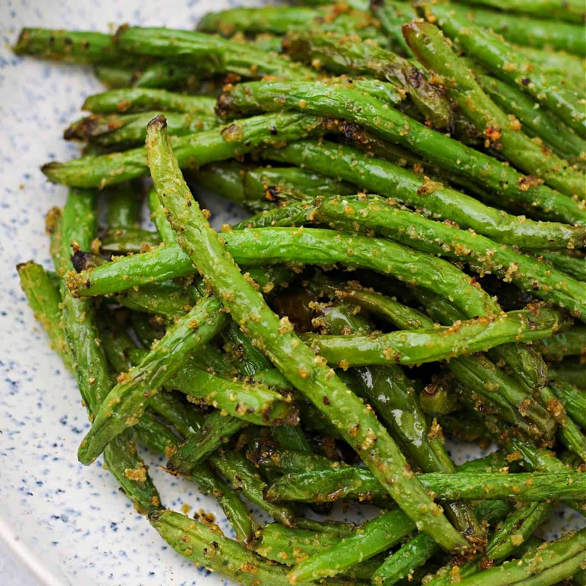

Air Fryer Green Beans

The fresh flavors of summer come alive in these air fryer green beans, a very simple side dish. They pair well with grilled chicken, fish or pork.
Ingredients
- 1 pound fresh green beans, ends trimmed
- 1 1/2 tablespoons olive oil
- 2 teaspoons lemon juice
- salt and freshly ground black pepper to taste
- 1/2 teaspoon lemon zest
- 4 lemon wedges for serving (optional)
Directions
- Preheat the air fryer to 380 degrees F (195 degrees C).
- Place green beans, olive oil, lemon juice, salt, and pepper in a large bowl and toss to coat. Using tongs, place green beans into the air fryer basket without overcrowding, reserving any remaining liquid in the bowl. You may need to work in batches, depending on the size of your air fryer.
- Cook green beans until crisp-tender, 8 to 10 minutes, shaking the basket halfway through. When green beans are done, return to the bowl and toss with the lemon zest. Serve with additional lemon wedges.